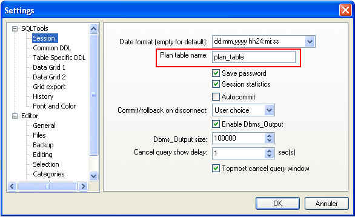

Execute the Oracle explain plan for the current query. Plan table should
exist in database schema and plan table name should have been previously
defined in settings :

The explain plan output will appear in the "Plan" tab of the
result window. Then, it can be opened with default HTML viewer, with
icon :